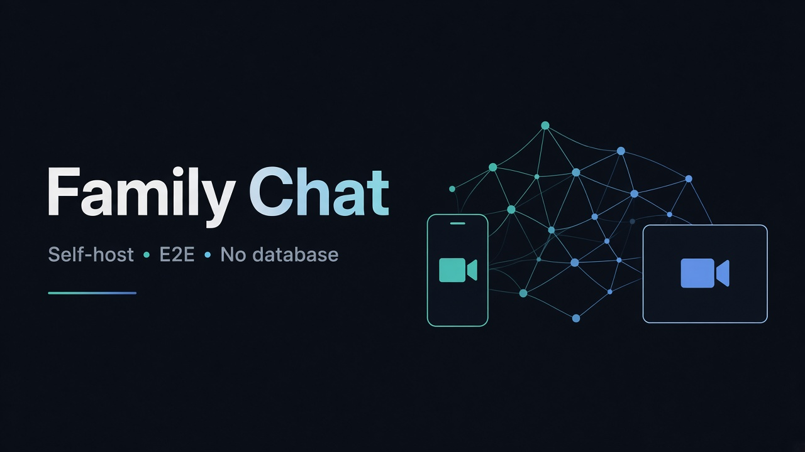
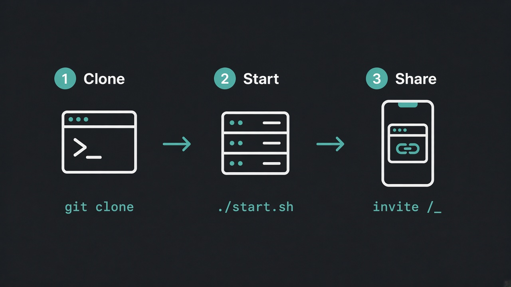

Family Chat
Self-host messenger + video calls with masks · личный сервер без базы данных
1. Что это
- Свой сервер (как 3x-UI): clone → start → ссылка
- Чат с E2E: сервер видит только шифротекст
- Видеозвонки WebRTC + маски
- Нет базы данных — всё в RAM. Рестарт = чистая память
- Почта — только ID. Пароль от Яндекса не нужен

2. Запуск на VPS (копируй целиком)
./start.sh сам ставит Node.js 20, если его нет (Ubuntu/Debian).
Вариант A — есть git (HTTPS, SSH не нужен)
sudo apt update && sudo apt install -y git curl unzip git clone https://github.com/RatseevTimur/video-chat.git cd video-chat chmod +x start.sh ./start.sh
Вариант B — нет git (ZIP)
sudo apt update && sudo apt install -y curl unzip curl -L -o chat.zip https://github.com/RatseevTimur/video-chat/archive/refs/heads/main.zip unzip -o chat.zip cd video-chat-main chmod +x start.sh ./start.sh
Уже в папке, нет Node?
cd ~/video-chat-main chmod +x start.sh ./start.sh
3. Что появится в терминале
→ http://ВАШ_IP:4000/?invite=XXXX
Эту ссылку отправьте родственникам. Открыли → имя + почта (как ID) → чат/звонок.
Рестарт сервера очищает чаты в RAM. Ключи E2E остаются в браузере людей.
4. Открыть порт
# UFW пример sudo ufw allow 4000/tcp sudo ufw reload
Если есть домен и nginx — проксируйте на 127.0.0.1:4000 (желательно HTTPS).
5. Архитектура

1. What it is
- Self-host like 3x-UI: clone → start → invite link
- E2E chat: server only stores ciphertext in RAM
- WebRTC video + face masks
- No database. Restart wipes server memory (by design)
- Email is just an ID — no mailbox password
2. Deploy on a VPS (copy-paste)
./start.sh auto-installs Node.js 20 on Ubuntu/Debian if missing.
Option A — with git (HTTPS, no SSH required)
sudo apt update && sudo apt install -y git curl unzip git clone https://github.com/RatseevTimur/video-chat.git cd video-chat chmod +x start.sh ./start.sh
Option B — no git (ZIP)
sudo apt update && sudo apt install -y curl unzip curl -L -o chat.zip https://github.com/RatseevTimur/video-chat/archive/refs/heads/main.zip unzip -o chat.zip cd video-chat-main chmod +x start.sh ./start.sh
Already extracted, no Node?
cd ~/video-chat-main chmod +x start.sh ./start.sh
3. Terminal output
→ http://YOUR_IP:4000/?invite=XXXX
Share that link. Relatives open it → name + email (ID) → chat/call.
Server restart clears RAM chats. Browser E2E keys remain on devices.
4. Open the firewall
sudo ufw allow 4000/tcp sudo ufw reload
5. Architecture
Страны с блокировками / Censorship tips
RU
- Ставьте приложение на российский VPS — сигналинг не зависит от Google.
git clone https://…— SSH-ключ не нужен.- Если GitHub недоступен с сервера: скачайте ZIP дома и залейте через
scp. - Видео идёт P2P. Если «не соединяется» из-за NAT — добавьте свой TURN (coturn) на том же сервере.
- Не используйте чужой SMTP: invite-ссылка из терминала достаточна.
- Открытость кода не раскрывает чаты — важны invite и ключи в браузере.
EN
- Host on a VPS inside the region your family can reach.
- Prefer HTTPS clone; SSH keys are optional.
- If GitHub is blocked: download ZIP elsewhere, upload with
scp. - Video is P2P. For hard NAT, run coturn on the same host.
- No mailbox login needed — share the invite printed by
./start.sh. - Public source code does not decrypt messages.
scp если GitHub закрыт / Upload ZIP via scp
# на своём компьютере / on your laptop curl -L -o chat.zip https://github.com/RatseevTimur/video-chat/archive/refs/heads/main.zip scp chat.zip root@ВАШ_СЕРВЕР:/root/ # на сервере / on the server cd /root unzip chat.zip cd video-chat-main chmod +x start.sh ./start.sh
Закрепить invite / Keep the same invite after reboot
INVITE=my-family-secret PORT=4000 ./start.sh # или перед запуском: # export INVITE=my-family-secret
Данные чатов всё равно только в RAM. Invite лишь открывает вход.